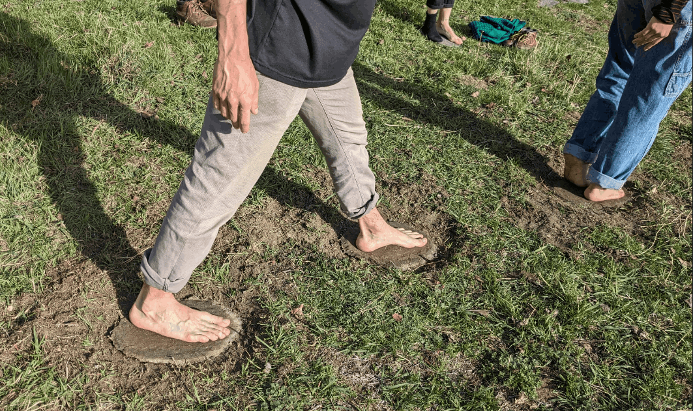
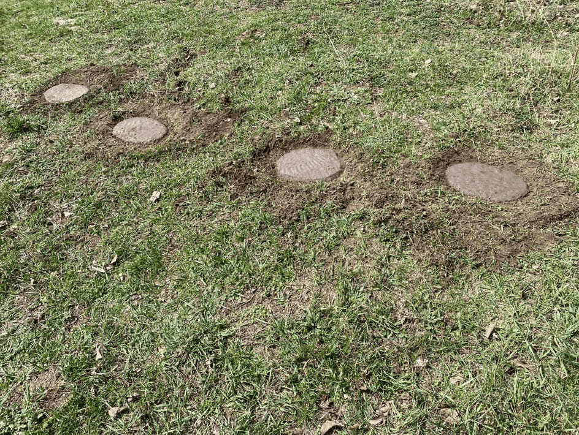
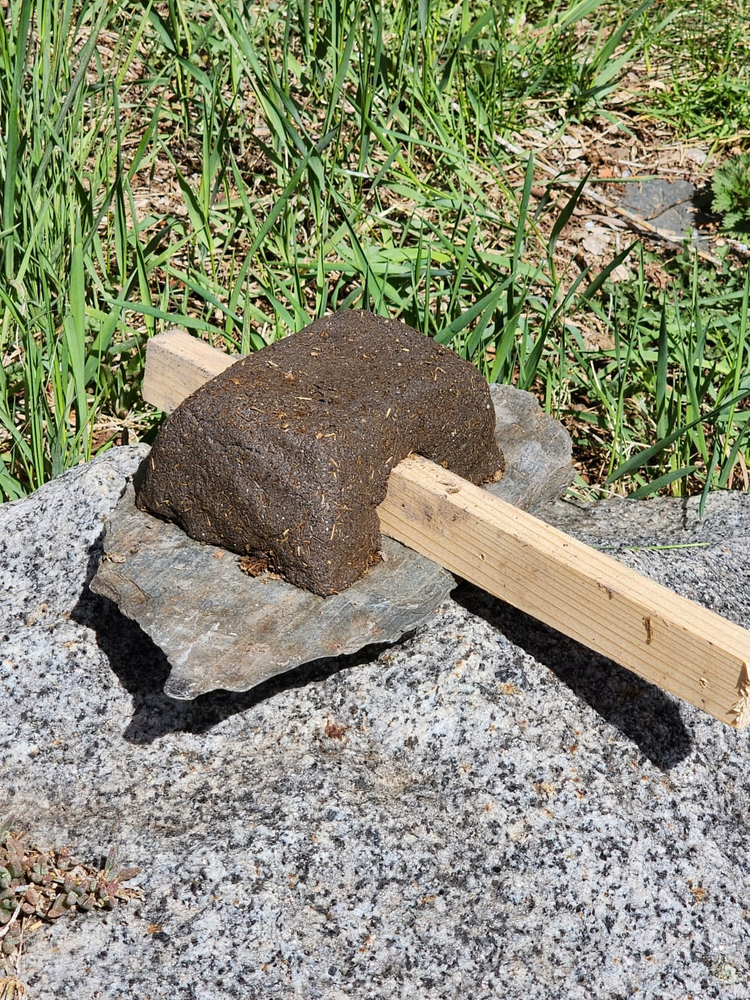
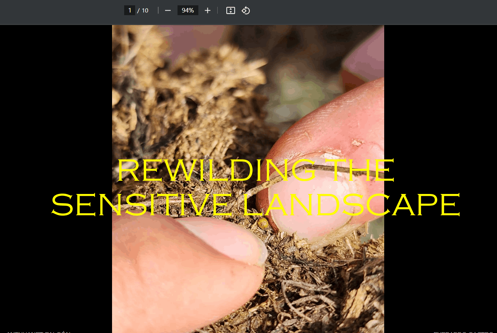
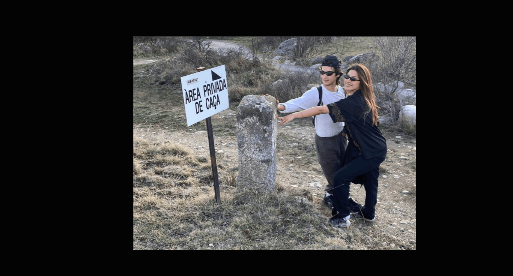

Best AI Website Creator Explorations at La Grand Maison Rouge
In the vast open air, where silences are comforting and the aroma of wood fire surrounds us, we find ourselves amidst the mountains, in contact with elements that are scarce in large cities. I call them the invisible intelligent forces: the wind whispering through the branches, the deep darkness that invites belief in magic, the sun sharing its enthusiasm for exploring the day, the air we breathe, and the soil we touch. Upon arriving at our destination, I set out to connect with these forces, with our ancestors through matter.
Exploring alongside Merce and Thomas our symbiotic world at La Grand Maison Rouge using tools like cameras, recorders, and perception objects was a revealing experience. The welcoming environment inspired us to generate a series of interventions that helped us interpret our stay creatively and freely. This journey not only involved studying other living systems and communities but also delving into a profound reflection on our connection with nature and ancestral intelligences.

9 a.m. It's a sunny and mild morning. You find yourself enjoying a cup of ginger tea on the patio of La Grande Maison Rouge. Coming from the city, your desire to head to the mountains is inevitable, so you decide to explore the terraces of the place. The distant sound of the stream accompanies you on your journey, while the song of birds and the wind among the trees invite you to pay closer attention.
You settle down for a moment, taking it all in, and begin to contemplate and observe. You start to notice the ground moving, so you take a closer look and find yourself in another world teeming with micro-insects and micro-moments. You begin to touch the ground covered in a carpet of grass and leaf litter. Your inner child has awakened, curiosity getting the best of you as you kick off your shoes.
You stand up, and the sensation is strange; the soles of your feet are no longer confined by shoes or in contact with flat, polished surfaces. Confused by this feeling, you take your first steps and notice how the muscles in your toes begin to activate. As you ascend higher through the forest barefoot, your body's anatomy begins to be engaged. The materiality of the space starts to be perceived by your feet, and your perspective begins to shift.

Mix of compost, clay, and soil. This path invites us to bare our feet in the wild and experience the sense of touch not only with our hands. The mixture, when moist, exhibits a certain plasticity thanks to the clay, while the soil provides nutrients and the compost offers plant fibers that, when dried, provide firmness to the ground while also offering a certain softness and cushioning when stepped on. The purpose of this path is to offer an alternative to paths made of stone or concrete, which are very solid and can reach high temperatures due to sun exposure. It serves as a more comfortable and liberating option without losing connection with the surroundings, allowing barefoot walking in the mountains, where textures can be prickly and rough, and where there may be human waste that could cause harm to the skin upon contact.

#LIVING TECHNOLOGY #COLLECTIVE SYMBIOSIS #SOIL
After exploring our encounters with the environment, we became interested in the microworld and its interactions between the landscape and ourselves as active agents. The plant world, the soils, and their mysteries, as well as surfaces that generate life, such as the feces of animals in the landscape, such as cows, deer, and horses in the area, allowed us to discover the fascinating world of compost. In these feces, we found co-creative living systems, such as mycelium and roots, coexisting to generate life in the collective and interconnected soil system, as well as microorganism technologies not perceived by humans.
Upon encountering our collective observations, we decided to experiment with symbiotic matter through our curiosity and personal interpretations. Everardo explored with wild clays from different places, testing their properties such as plasticity, color, and texture. At the same time, integrating clay with mycelium, while Anthuanet investigates plant cognition and root adaptations during their growth, exploring their interaction in different types of soils and with other living organisms. This combination of approaches motivated us to travel in our experimentation with the symbiotic matter of space.
First, we sought symbiotic materials from the area, involving ourselves with the community of the town. We went to the tree nursery where young trees grow for reforestation. There we identified different types of soil, finding three types: one belonging to the mountain, another to the nearby farms, and another from the nursery itself, differentiated by different amounts of soil, clay, sand, and organic matter.
Subsequently, we visited Jaume and his wife's ceramics workshop, where they kindly gave us some clay from their studio and fertile soil from their garden to experiment with. After obtaining these elements, we decided to search for our life-generating surfaces (feces) and observe their behavior through our mixes.
The pieces form a collection of intentional structures to understand their plasticity and integration with systems of other living organisms.


Best AI Website Creator